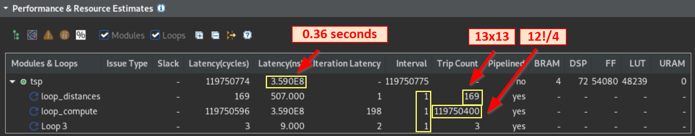

Vitis™ ハードウェア アクセラレーション チュートリアルxilinx.com の Vitis™ 開発環境を参照 |
注記:
このセクションでは、距離をフェッチするために 4 回のパラレル メモリ ルックアップを使用して巡回セールスマン問題 (TSP) デザインがインプリメントされます。
Vitis HLS へのプロジェクトの読み込み¶
ターミナルを開いて build ディレクトリに移動します。次のコマンドを実行すると、Vitis HLS のグラフィカル インターフェイスが開き、hls_opt.tcl Tcl ファイルに含まれている設定に基づいてプロジェクトがコンフィギュレーションされます。
user@server:~$ cd ./build user@server:~$ vitis_hls -p hls_opt.tcl &ツールが表示されたら、左側の [Explorer] ビューで proj->Source を展開し、tsp_opt.cpp をダブルクリックしてソース コードを確認します。テストベンチは、proj->TestBench のすぐ下の tsp_TB.cpp というファイルにあります。
コード変更の確認¶
距離に対して配列が 4 つあります。
uint16_t distances_0[N][N];
uint16_t distances_1[N][N];
uint16_t distances_2[N][N];
uint16_t distances_3[N][N];
受信する距離データ ポイントは一度に 1 つずつ読み出されますが、4 つのメモリすべてにコピーされます。
loop_distances: for (int i = 0; i < N*N; ++i)
{
uint16_t val;
streamDistances >> val;
distances_0[i/N][i%N] = val;
distances_1[i/N][i%N] = val;
distances_2[i/N][i%N] = val;
distances_3[i/N][i%N] = val;
}
loop_compute メイン ループは連続的に 4 インクリメントし、compute 関数のコピーに 4 つの値を分配します。それぞれが経路を評価します。
loop_compute: for( unsigned long int i_ = 0; i_ < factorialN; i_ += 4 )
{
#pragma HLS pipeline II=1
candidate0 = std::min(candidate0, compute(i_+0, distances_0));
candidate1 = std::min(candidate1, compute(i_+1, distances_1));
candidate2 = std::min(candidate2, compute(i_+2, distances_2));
candidate3 = std::min(candidate3, compute(i_+3, distances_3));
}
最短距離の最終的な決定は、次のとおりです。
// Determine shortest between the 4 candidates
shortestDistance = std::min({ candidate0, candidate1,
candidate2, candidate3 });
C シミュレーションおよび C 合成の実行¶
まず、C シミュレーションを実行し、最適化されたデザインが問題なく動作することを確認します。シミュレーションのランタイムを短縮するために tsp.h ファイルを編集して少ない数の都市に設定し (N=5)、C シミュレーションを実行します。
シミュレーションの結果を確認したら、C 合成用に tsp.h ファイルで都市の数を再度増やし (N=13)、結果を元のデザインと比較できるようにします。C 合成を実行します。
次の図に、Vitis HLS GUI の C 合成レポートを示します ([Performance and Resource Estimates] セクション)。

次のことがわかります。
tsp関数のレイテンシは 1 秒未満である入力データは同じであるため、ループ距離トリップカウントは予期したとおり変わっていない
compute関数のパラレル実行により、メイン ループのトリップカウント (loop_compute) は階乗 12 の 4 分の 1 (12!/4) である新しい
Loop 3は、取得した 4 つの結果の最小を返す最後の std::min 呼び出しからのものである